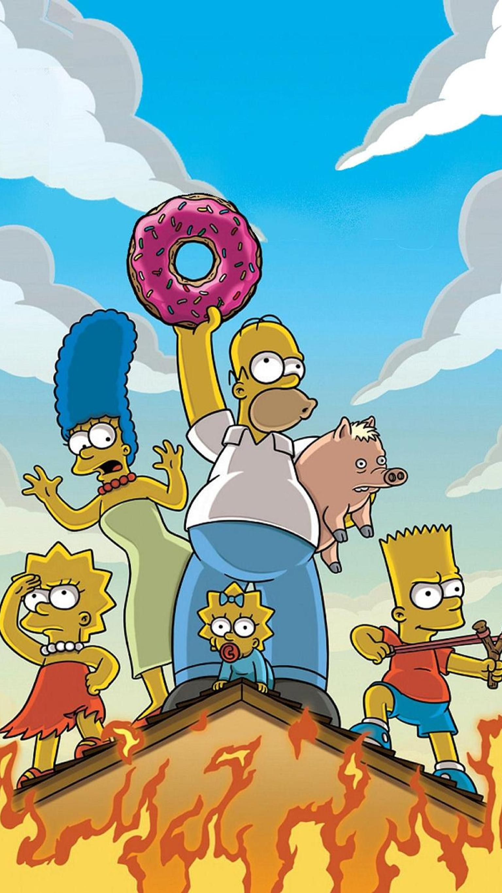
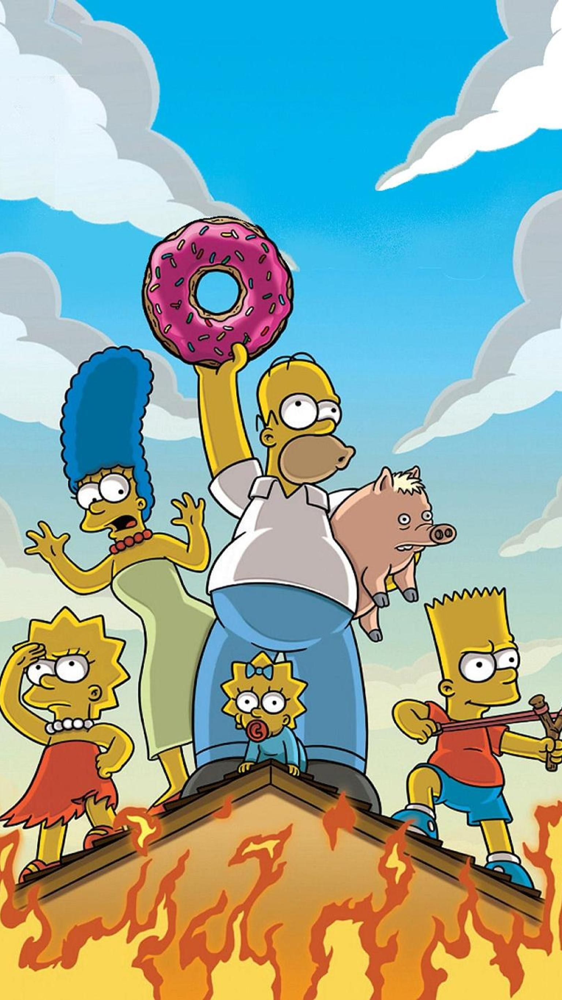

La serie animada que está marcando a generaciones

 



La historia sigue a la familia Simpson, formada por Homer, Marge, Bart, Lisa y Maggie, junto con los habitantes de Springfield. A lo largo de sus más de 30 temporadas, la serie ha abordado temas de la vida cotidiana, la cultura pop y la política con su característico humor satírico.
En la siguiente página puedes encontrar información sobre algunos de los personajes de la serie.
Personajes